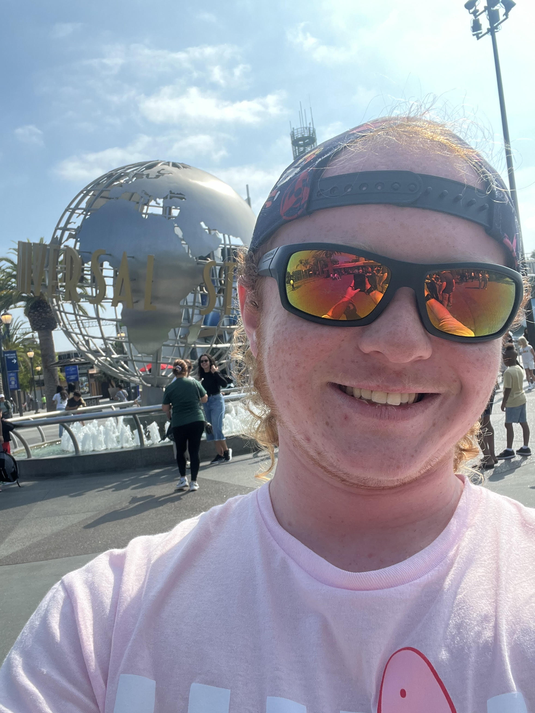

About TGH
TGH is the known name for the owner of TGH Animation's©. TGH was first seen in the world as the YouTuber: "Derpoozic". He had 511 subscribers by the day of 10/11/2024. He and his best friend Spencer K. Oliver have always wanted to make a TV show or comic together since they were 9 years old.
Contact Us
©TGH Animation'sUtah, USA
Phone: 385-866-9056